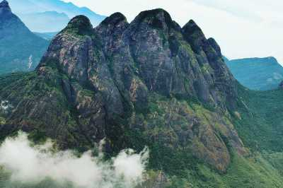

Neyyar Dam & Wildlife Sanctuary

Famous for its Lion and Deer Safari, Neyyar Wildlife Sanctuary is a treat for nature enthusiasts. The park houses a crocodile farm and elephant rehabilitation centre. Ask for a guided tour of the sanctuary which is quite informative.
Readmore
Agasthyakoodam

Agastyakoodam, also known as Agastya Mala Peak is the second highest peak in Kerala with an extensive height of 1868 metre. Located within the premises of Neyyar Wildlife Sanctuary, Agastyakoodam is part of the Agasthyamala Biosphere Reserve and boasts of surreal natural beauty. Nestled in Sahyadris of Western Ghats, the slopes of the peak are carpeted in purple hues of orchids. Home to diverse species of fauna and rare species of medicinal herbs, the region is a hotspot for avifauna and exotic birds. The spot is considered a haven for birdwatchers. Besides, since it is a protected zone, you can spot nature at its best, without any commercial interference. The colossal peak is also a major Hindu pilgrimage spot for the devotees of the Hindu sage Agastya, on whose name the peak has been named. There is also a statue of him at the top where the Hindus can offer puja and prayers.
Readmore